멀티플레이(3인) 로그라이크 보스러시
양평화 · 팀장 / 서버·보스·맵 · 임현빈 · 플레이어·전투·스킬·카메라 · 이주영 · UI/UX·사운드
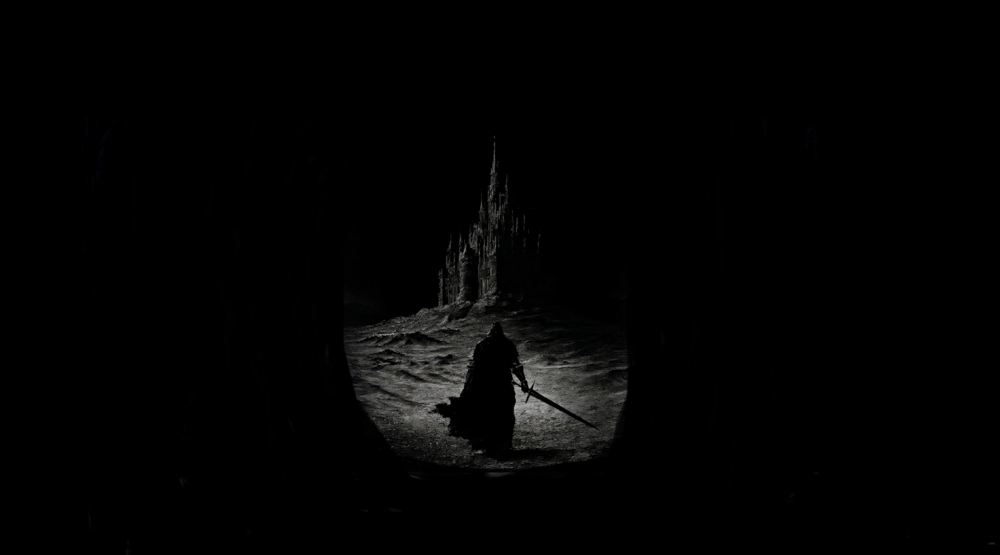
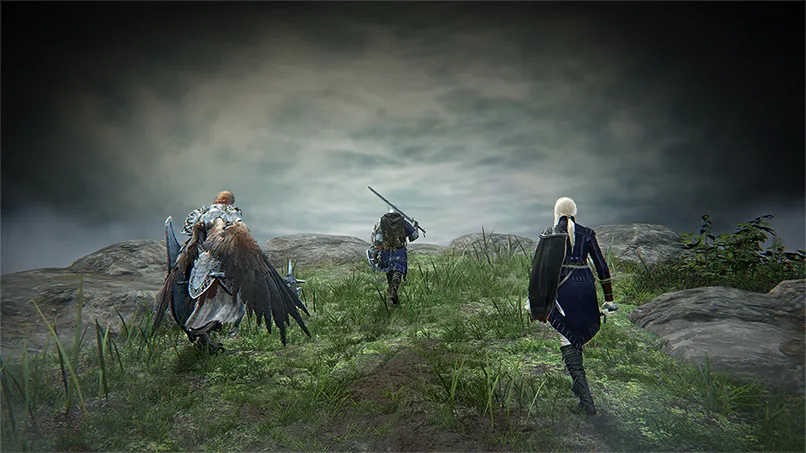
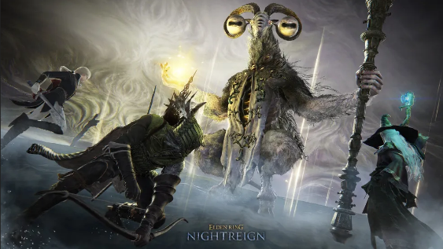
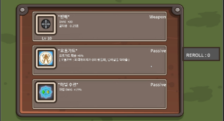
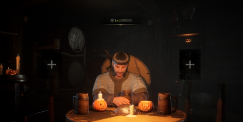
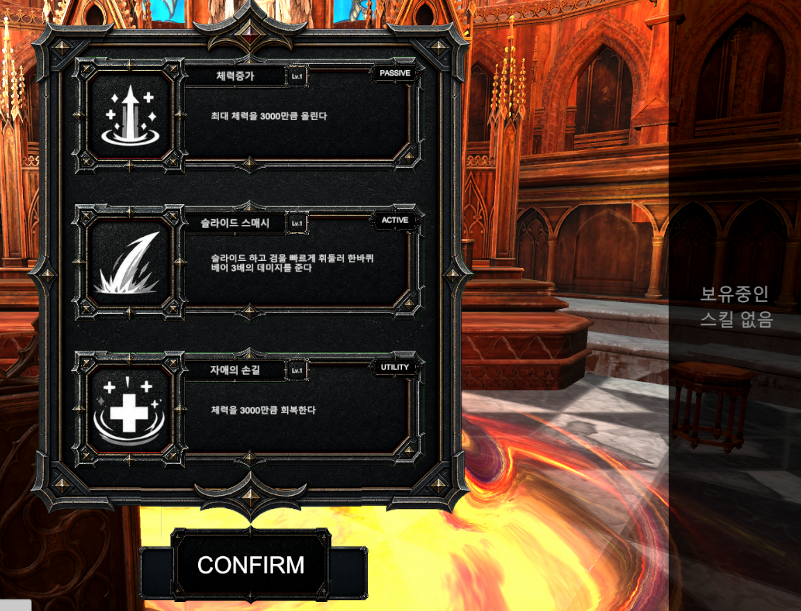
| 영역 | 기술 |
|---|---|
| 엔진 / 렌더링 | Unity + URP |
| 실시간 네트워크 | Photon — 호스트 권한형 동기화 |
| 백엔드 서버 | Apache + PHP + MySQL — soulrush_api/ + 관리용 웹 |
| 크래시 / 모니터링 | Sentry + 자체 CrashReporter |
| 데이터 | ScriptableObject(로컬) + 서버 DB(밸런스) 하이브리드 |
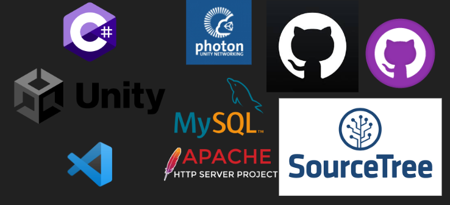
register.php · login.php — 가입 / 로그인check_session.php — 15초 하트비트, 중복 로그인 차단check_admin.php — 디버그 권한 검증get_abilities.php — 스킬 수치 카탈로그 조회update_skills.php — 해금 비트마스크 저장upload_ability.php — (에디터) 스킬 업로드submit_ranking.php / get_rankings.php — 팀 기록crash_report.php — 크래시 자동 수집admin_hub · crash_viewer · ranking_viewer · log_viewer:8080 핑, 실패 시 공인 IPlogin.php — 아이디/비번 인증check_session.php — 15초 하트비트, 중복 접속 차단get_abilities.php — 서버 밸런스 수치 최신화update_skills.php — 해금 시 비트마스크 저장submit_ranking.php 팀 기록 등록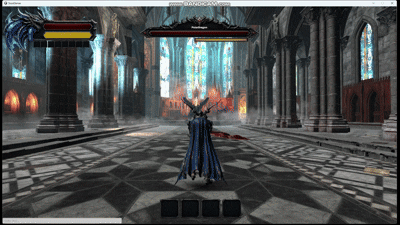
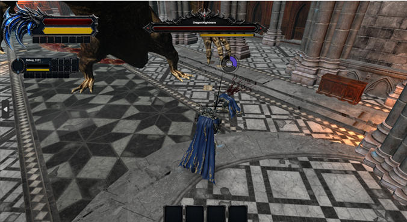
CameraManager가 PlayerFollow / LockOn / Cutscene 상태 관리CameraPointManager 지정 포인트로 보스 등장·보상·게이트 연출 이동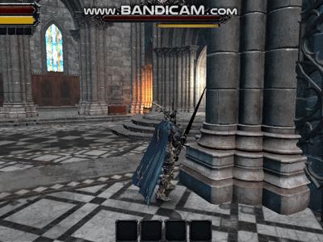
AbilityManager가 로컬 카탈로그에 반영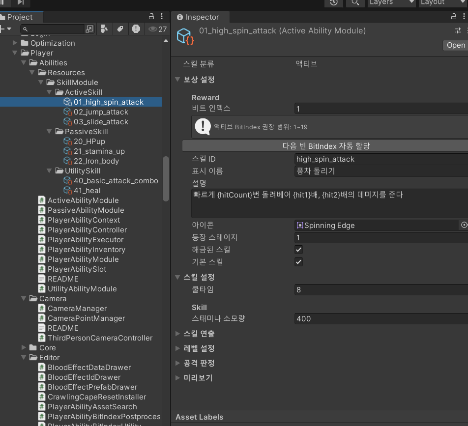
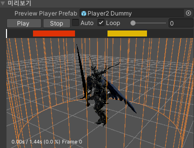
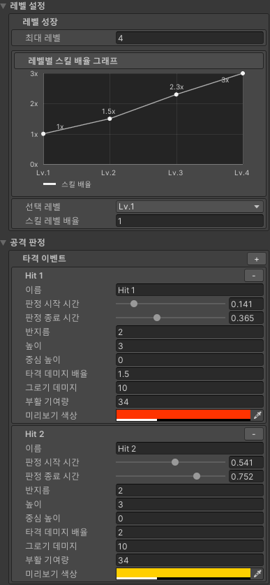
RewardManager 카드 후보 랜덤 생성 → 하나 선택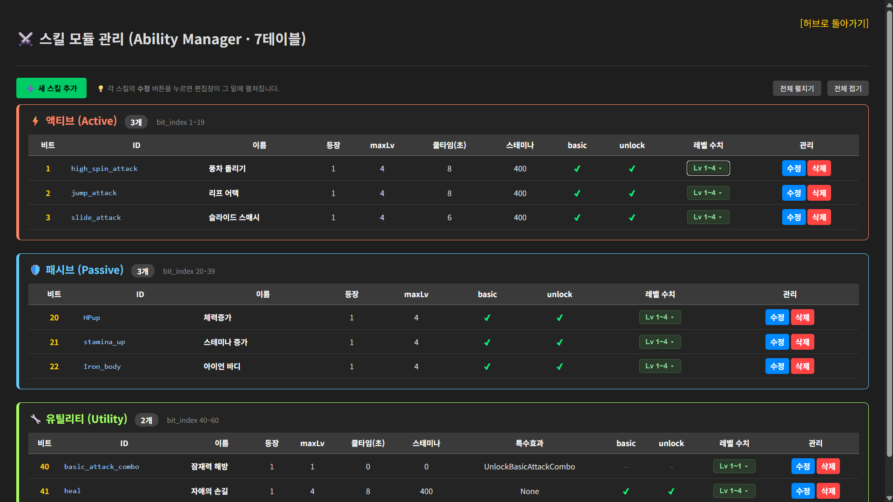
ActionSequence로 처리AbilityId별로 피 이펙트 프리팹·사운드·크기·색상 분리EffectPoolManager로 반복 생성 비용 관리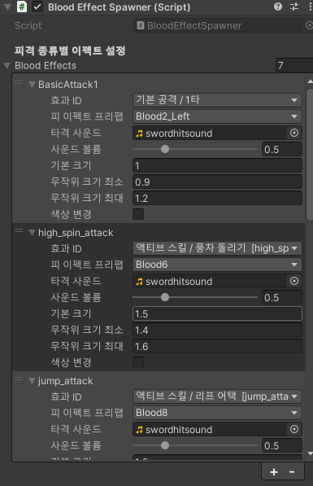
wakeUpRange 진입 시 포효 후 전투 개시CurrentPhase=2 → phase2 패턴으로 교체(광폭화)maxGroggy 시 정지, 받는 데미지 ×1.5 딜타임BossPatternSelector가 사거리 필터 + 가중치로 패턴 추첨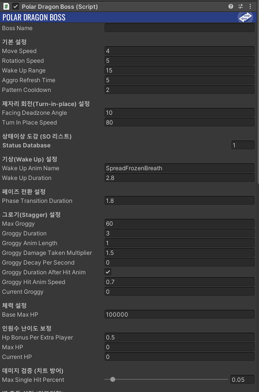
IBossVisual을 통해 연출(애니메이션·루트모션)만 각 클라이언트가 로컬로 재생 → 인원수만큼 중복되지 않는 깔끔한 권한 분리.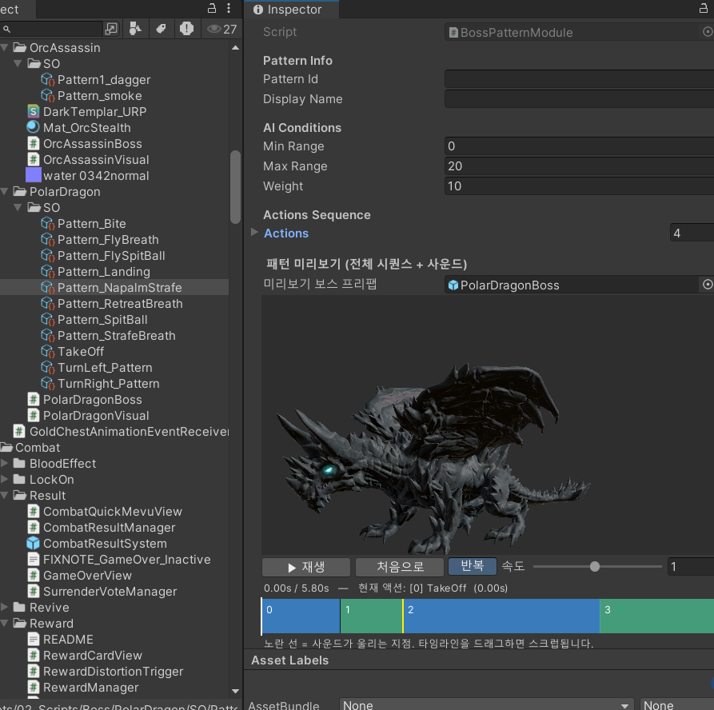
aggroRefreshTime 주기로 최다 딜러에게 어그로 변경PlayerRegistry 판정)NextLevelPortal — 파티가 모이면(ReadyCount) 다음 층 이동HealingAltar — 회복 제단 기믹(초당 회복)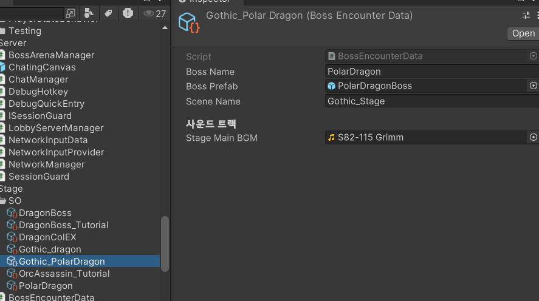
maxLevel)
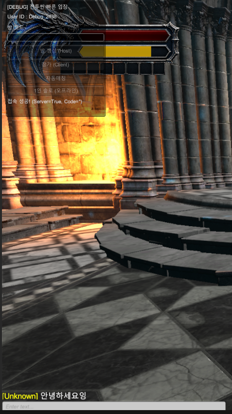
| 시스템 | 엔드포인트 |
|---|---|
| 로그인/세션 | login.php, check_session.php, update_skills.php |
| 스킬 DB | get_abilities.php, upload_ability.php — 스킬모듈↔서버 연결 |
| 팀 랭킹 | submit_ranking.php — 소요시간 정렬 + 팀원 딜량 |
| Admin 권한 | is_admin — 서버가 권위 판정 |
| 크래시 리포트 | exception / unhandled / native_crash, 선저장 후 재전송 |
users.unlock_bitmask ↔ update_skills.php, abilities(7테이블) ↔ get_abilities.php — 스킬모듈과 서버 DB를 잇는 핵심 구조.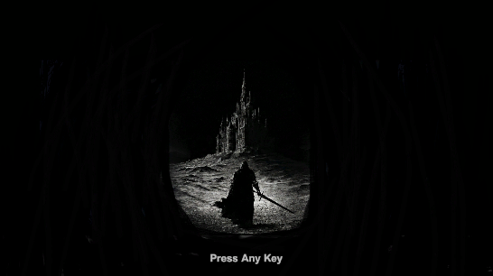
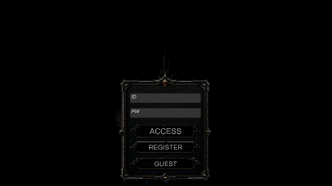
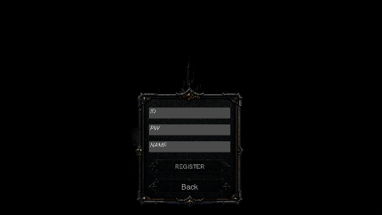
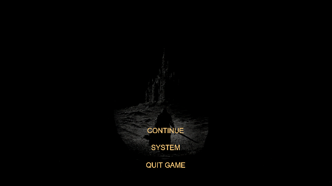
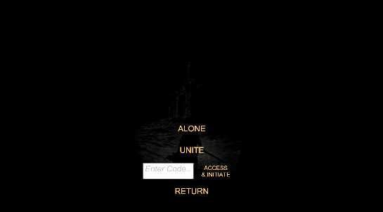
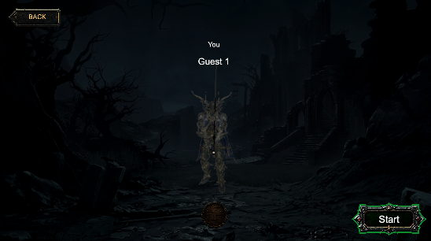
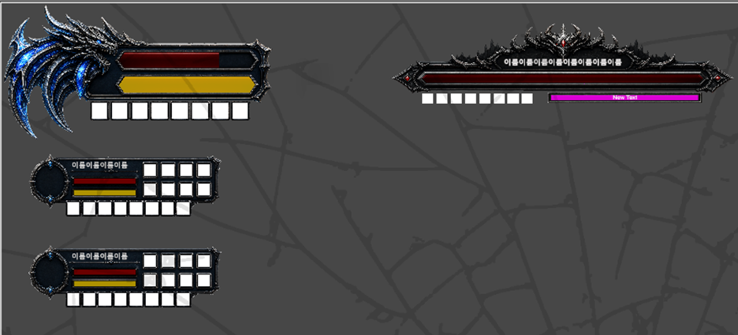
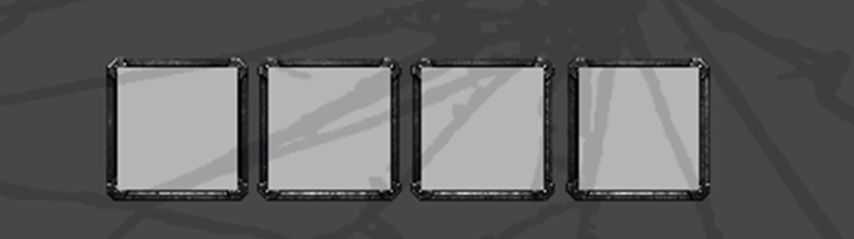
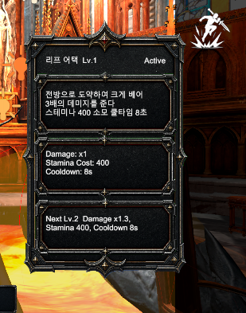
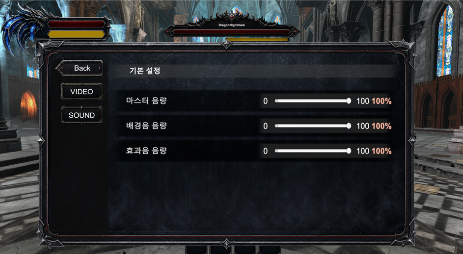
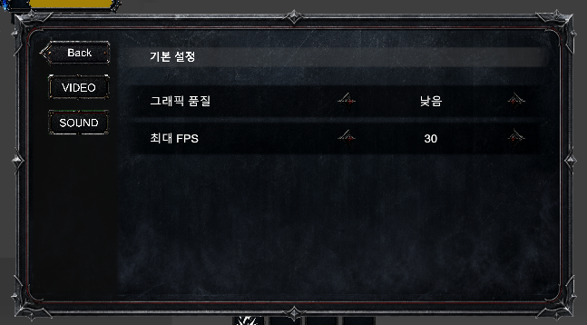
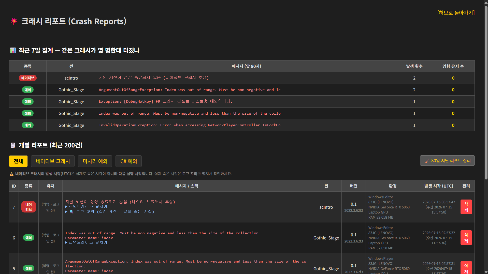
🎬 데모 영상
SOUL RUSH — 양평화 · 임현빈 · 이주영